ダイオードのはんだ付け（スルーホール）
※最後に動画があります。
スルーホールタイプの部品
- スルーホールタイプの部品とは、写真のように部品とリード線がくっついた形状の部品です
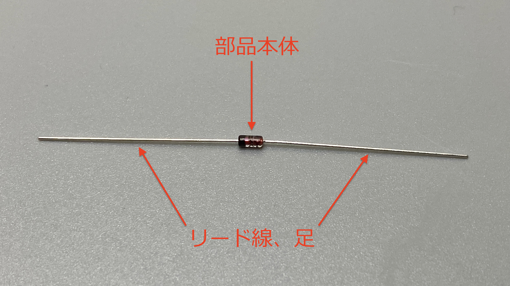 - スルーホール

- スルーホールにリード線を挿入してからはんだ付けを行うため、スルーホールタイプといいます 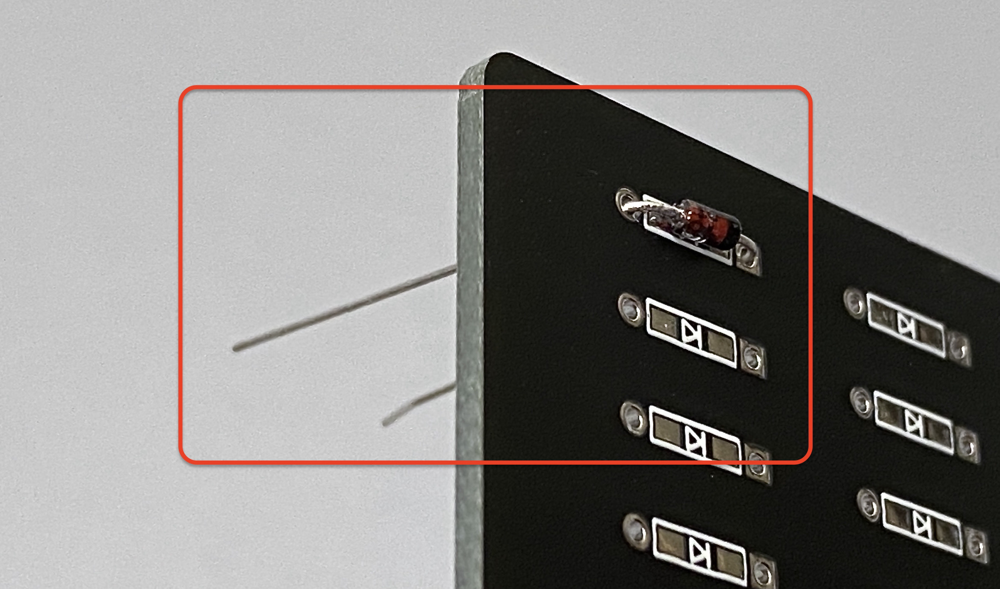
スルーホールタイプ ダイオードのはんだ付け
自作キーボードでもっとも使われている部品がスルーホールタイプのダイオードになります。
シンプルで練習にも向いているので、これを使っていきましょう。
- こちらのスペースを使います
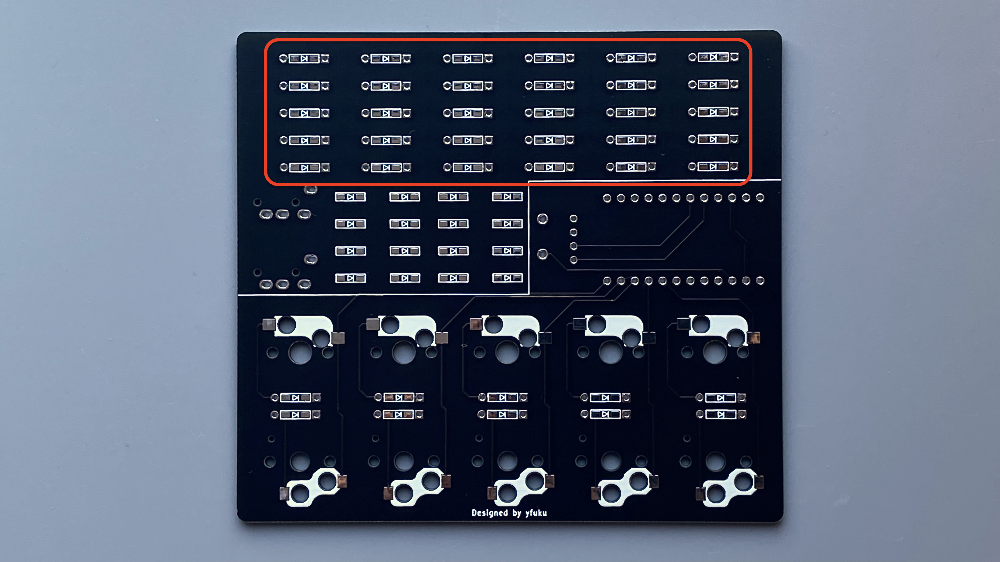
ダイオードの準備
- まずはダイオードを挿入しやすい長さで折り曲げます。ダイオードベンダーを使用するとキレイにハマるのでオススメです。


-
スルーホールに挿します
- 三角と棒を組み合わせたマークがダイオードです
- 三角の先の縦棒と、ダイオードの黒線を合わせます（ダイオードには向きがあります）
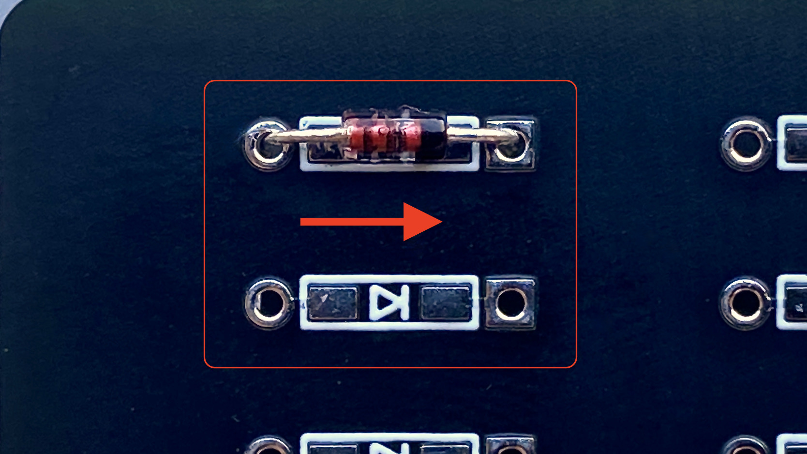
-
上からマスキングテープでとめます。浮かないように密着させてください。
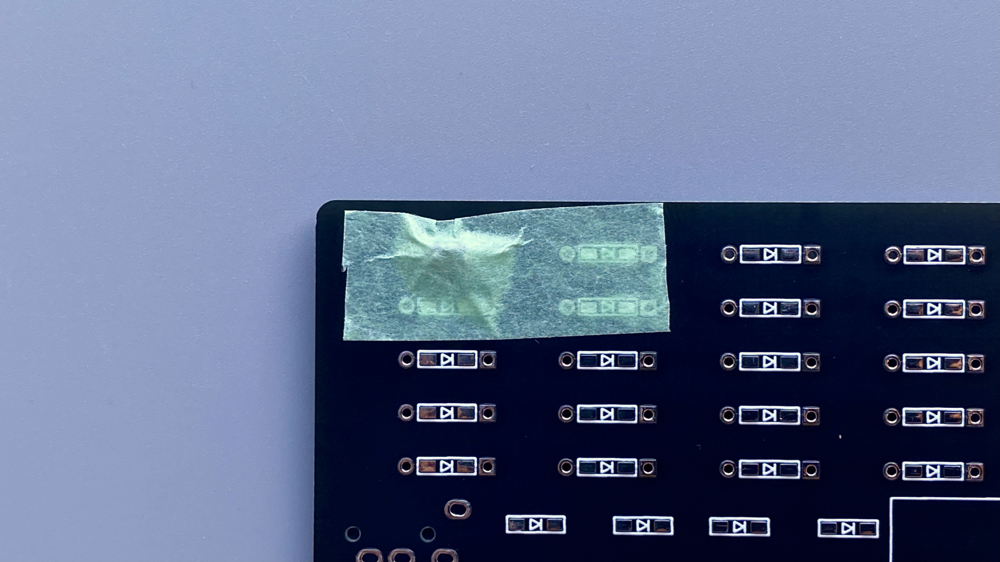 -
裏返します
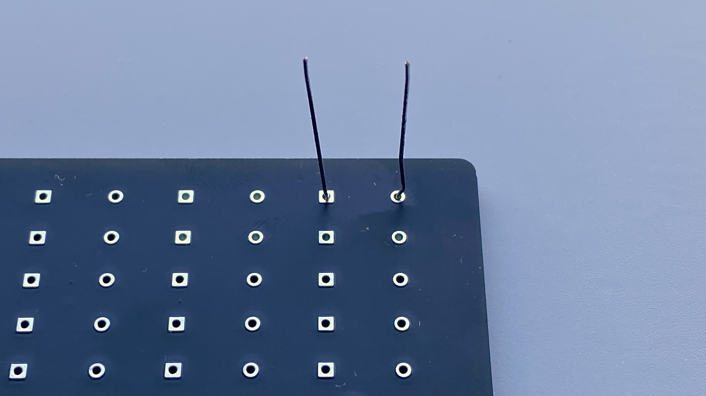 -
ニッパーで足を短くカットします。0.5〜2.0mmくらい残してください。
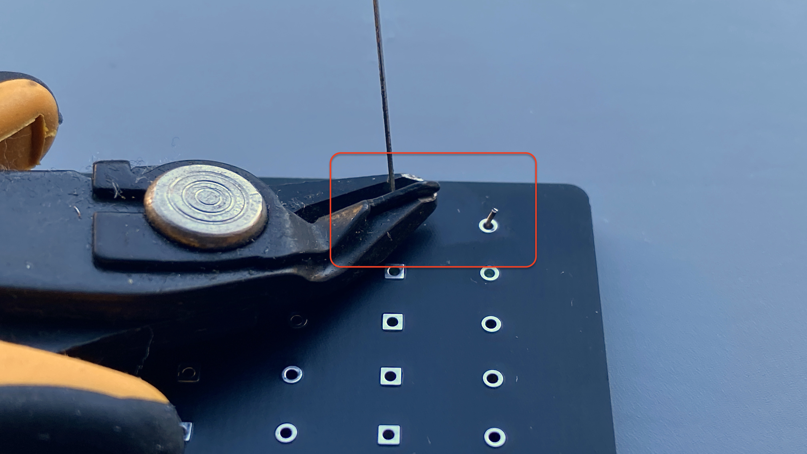
はんだ付け
-
温度は340-350度くらいが良いようです
（私は目盛りを合わせるのが楽なので320度でやっています） -
クリーナーでコテ先をキレイにしておきます
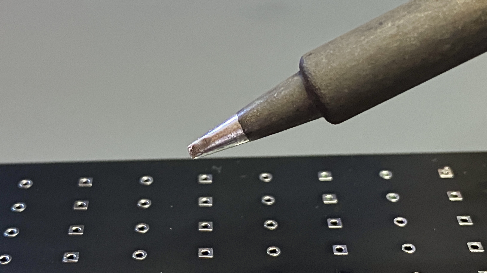 -
リード線とパッドの両方にコテ先をあてます
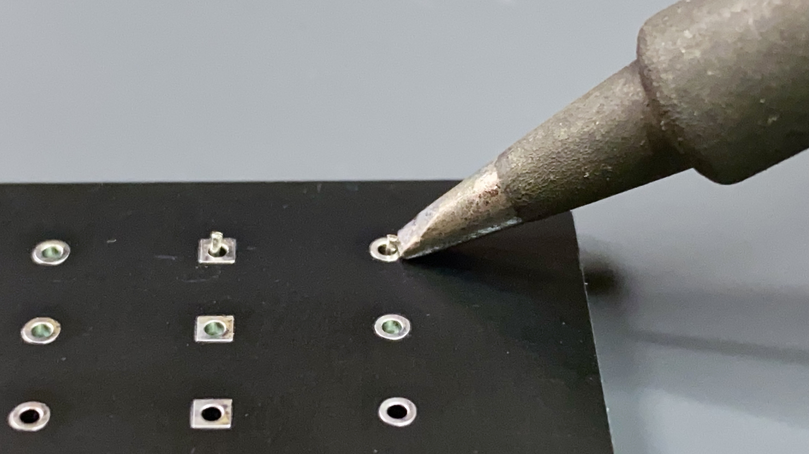 -
コテ先あたりにハンダを流し込みます。適量流し込んだらハンダを離します。その後にコテ先を離します。コテ先をあてる時間は3秒くらいを目安にしてください。
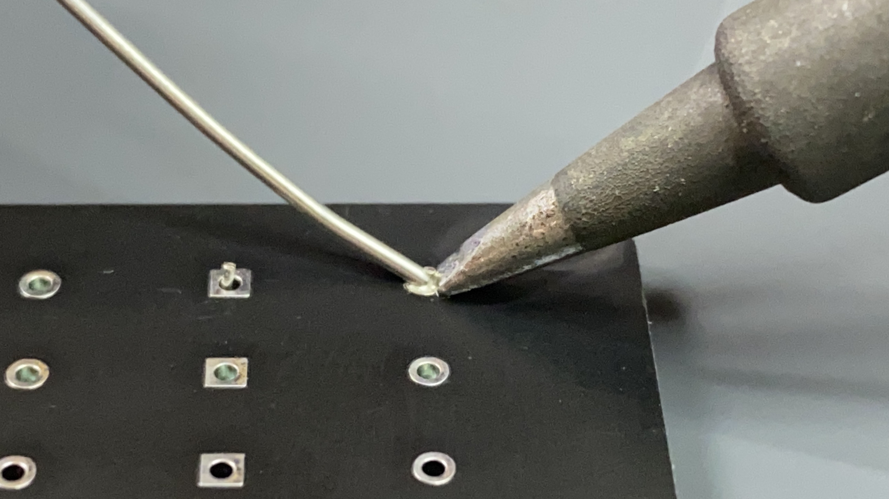 -
ハンダの量はこれくらいを目安にしてください。光沢があり、富士山の形のように両側にフィレットができると良いはんだ付けと言われています。 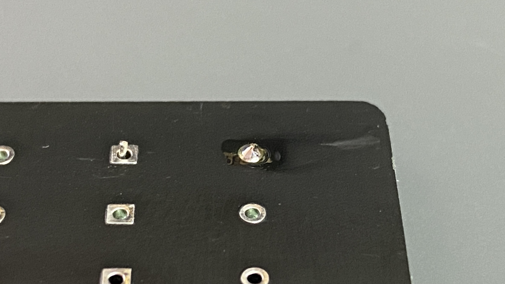
-
何個かまとめてやって、慣れていきましょう！
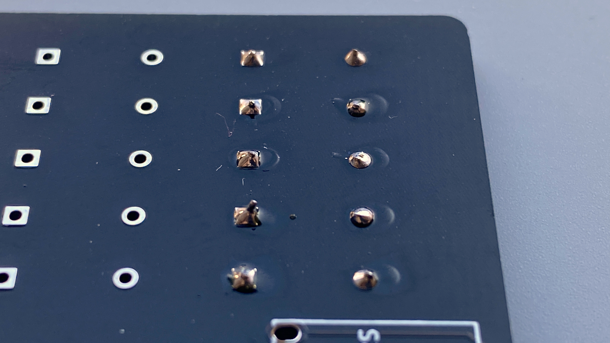
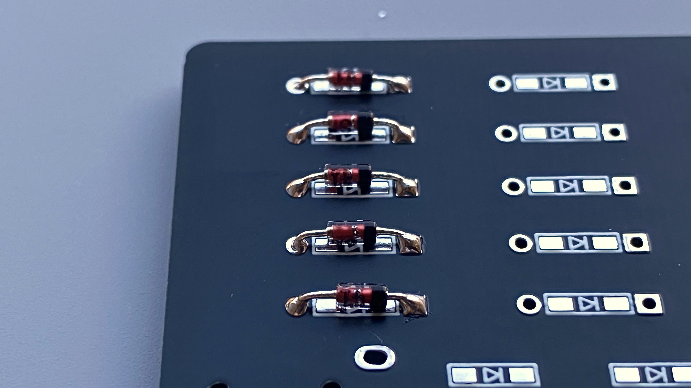 -
全部つけてみました
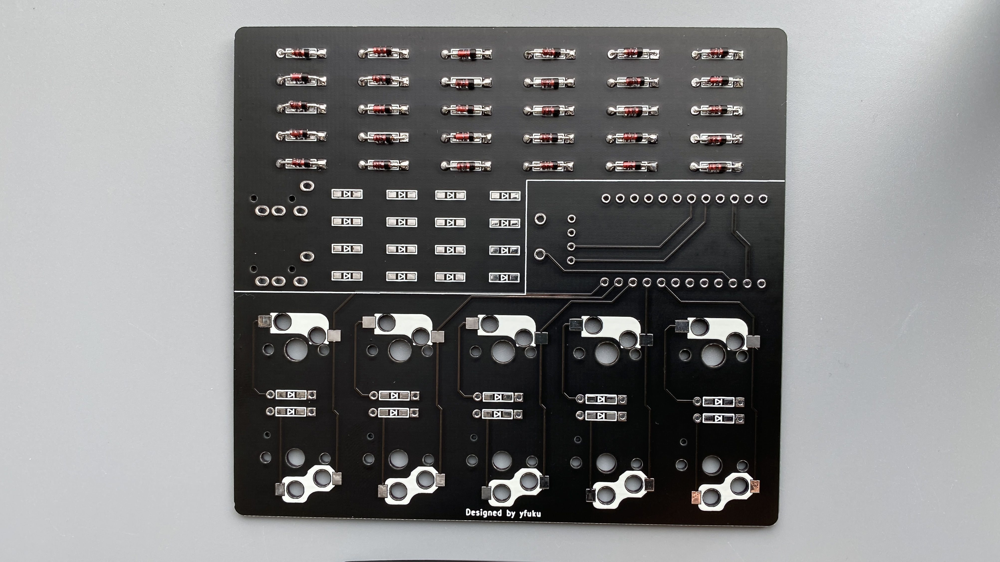
動画で見る
最終更新 January 1, 0001